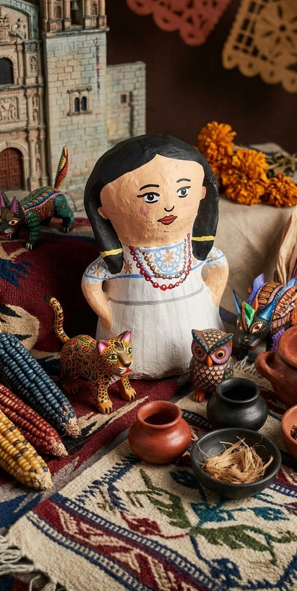
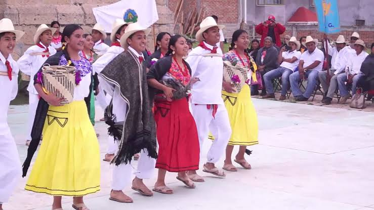
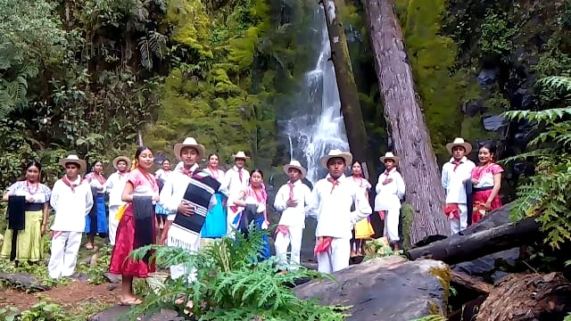
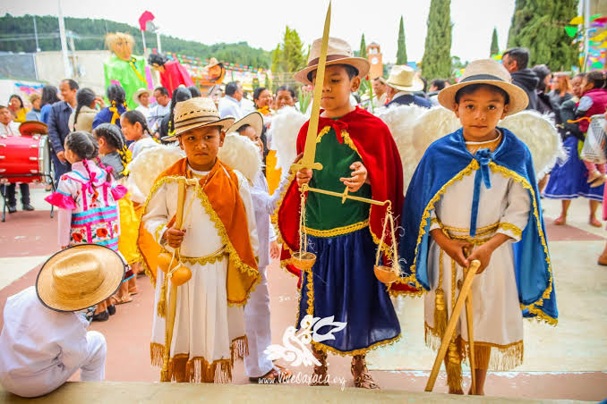
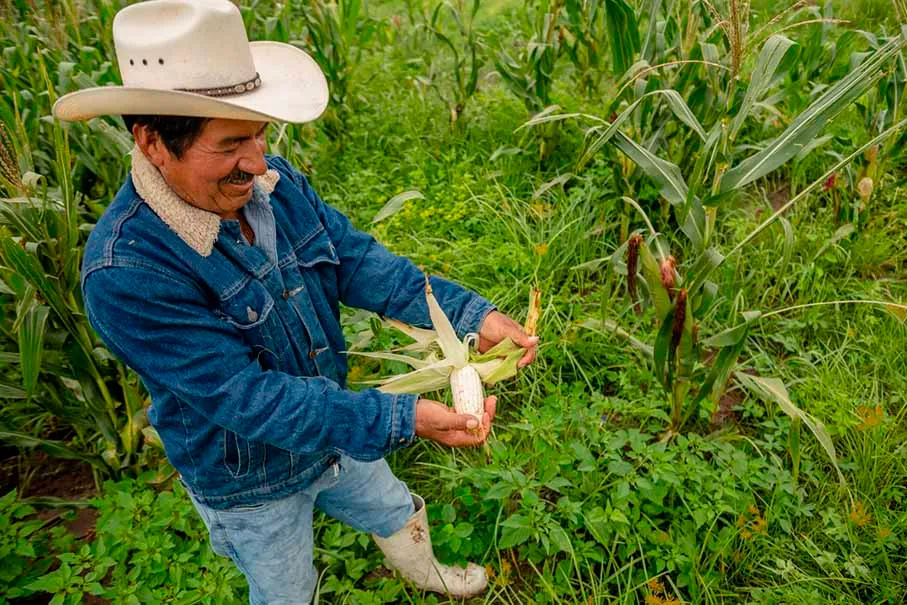

San Miguel el Grande
Muñeca artesanal inspirada en la identidad cultural y vestimenta tradicional del pueblo mixteco San Miguel el Grande.
Descripción
Esta pieza artesanal representa la riqueza cultural, tradiciones y vestimenta típica del municipio, preservando el patrimonio cultural de la Mixteca oaxaqueña.
Historia de la vestimenta tradicional
La vestimenta tradicional de San Miguel el Grande forma parte de la identidad cultural de la región mixteca de Oaxaca. Desde tiempos antiguos, las comunidades indígenas de la Mixteca utilizaban prendas elaboradas artesanalmente con materiales naturales y técnicas transmitidas de generación en generación.
En el caso de las mujeres, era común el uso de huipiles bordados a mano, faldas largas de colores oscuros y rebozos tejidos artesanalmente. Los bordados suelen incluir figuras geométricas, flores y símbolos relacionados con la naturaleza y las creencias de la cultura mixteca.
Los hombres tradicionalmente utilizaban ropa de manta blanca, sombreros de palma y huaraches, prendas adecuadas para el trabajo agrícola y las actividades comunitarias. Actualmente, aunque gran parte de la población utiliza ropa moderna en la vida cotidiana, durante fiestas patronales, celebraciones religiosas y eventos culturales todavía se conserva el uso de vestimenta tradicional como símbolo de identidad y orgullo cultural.

Tradiciones, festividades y costumbres
San Miguel el Grande conserva una fuerte identidad cultural basada en sus costumbres comunitarias, celebraciones religiosas y tradiciones del pueblo mixteco.


Usos y costumbres
La comunidad organiza su vida política, social y cultural mediante el sistema de usos y costumbres, donde las decisiones importantes se toman en asambleas comunitarias.
Tequio comunitario
El tequio consiste en realizar trabajos comunitarios sin remuneración económica, como limpieza de caminos, mantenimiento de escuelas y reparación de espacios públicos.
Lengua mixteca y valores tradicionales
Muchas familias conservan la lengua mixteca y valores como el respeto a las personas mayores, la solidaridad familiar y la ayuda mutua entre vecinos.
Fiesta patronal de San Miguel Arcángel
Cada 29 de septiembre se celebra la fiesta patronal con misas, procesiones, música de banda, danzas tradicionales, juegos pirotécnicos y convivios comunitarios.
Día de Muertos
Las familias colocan altares y ofrendas con flores, veladoras, alimentos y fotografías para recordar a sus familiares fallecidos.
Mayordomías
Las mayordomías forman parte importante de la vida comunitaria, donde familias organizan actividades religiosas y culturales como muestra de fe y servicio hacia la comunidad.
Estas tradiciones fortalecen la identidad cultural de San Miguel el Grande y preservan las costumbres transmitidas de generación en generación.
Videos y contenido cultural


Rutas turísticas y turismo comunitario
San Miguel el Grande forma parte de la región Mixteca Alta de Oaxaca y cuenta con recorridos culturales, senderos naturales y actividades comunitarias que permiten conocer la riqueza cultural y paisajes de la región.
Ruta San Miguel el Grande – Heroica Ciudad de Tlaxiaco
Esta es una de las principales rutas de acceso al municipio.
Durante el trayecto pueden observarse paisajes montañosos, zonas agrícolas y comunidades rurales características de la región Mixteca Alta.
- Paisajes montañosos
- Zonas agrícolas
- Comunidades indígenas mixtecas
Ruta ecoturística y senderismo rural
Existen caminos y senderos utilizados tradicionalmente para conectar rancherías y terrenos agrícolas.
Actualmente algunos recorridos pueden utilizarse para caminatas, observación del paisaje natural y convivencia comunitaria.
- Caminatas rurales
- Observación natural
- Clima templado y montañas
Ruta cultural mixteca
San Miguel el Grande puede integrarse en recorridos culturales junto con otros municipios cercanos que conservan tradiciones indígenas, textiles artesanales, gastronomía regional y festividades mixtecas.
Turismo comunitario
Durante temporadas festivas, especialmente en las celebraciones de San Miguel Arcángel y Día de Muertos, visitantes pueden participar en actividades culturales, convivios comunitarios y expresiones tradicionales de la región.
Estas experiencias permiten conocer más sobre las costumbres, música, gastronomía y organización social del municipio.
Ubicación
Historias y leyendas
En San Miguel el Grande existen diversas historias transmitidas oralmente por generaciones.
Leyenda de los cerros protectores
Algunas personas mayores cuentan que ciertos cerros cercanos son considerados lugares sagrados y protectores de la comunidad. Según la tradición, estos sitios poseen energía espiritual relacionada con antiguas creencias mixtecas.
Apariciones en caminos rurales
También existen relatos sobre apariciones nocturnas en caminos antiguos y veredas alejadas. Algunas historias mencionan sombras o personas vestidas de blanco que aparecen durante la madrugada.
Espíritus de la naturaleza
Otra creencia tradicional está relacionada con cuevas, manantiales y árboles antiguos donde supuestamente habitan espíritus protectores vinculados con la cosmovisión indígena mixteca.
Actividad económica y artesanías
La economía de San Miguel el Grande se basa principalmente en la agricultura, la ganadería y la elaboración de artesanías tradicionales que forman parte importante de la cultura mixteca.
Agricultura tradicional
Muchas familias se dedican al cultivo de maíz, frijol y otros productos básicos utilizando técnicas tradicionales transmitidas de generación en generación.
Ganadería comunitaria
La crianza de ganado ovino, caprino y bovino representa otra actividad económica importante para diversas comunidades del municipio.
Artesanías y textiles
Algunas familias elaboran textiles, bordados y artesanías tradicionales inspiradas en la identidad cultural y las costumbres de la región mixteca.

Igualdad de género y participación comunitaria
En San Miguel el Grande se impulsan acciones orientadas a promover la igualdad de género, la prevención de la violencia y la participación activa de las mujeres dentro de la comunidad.
Participación comunitaria de las mujeres
Existen esfuerzos para fortalecer la participación de las mujeres en actividades comunitarias y espacios de decisión pública dentro del municipio.
Igualdad y derechos
Diversas acciones comunitarias y programas sociales promueven la igualdad de género y el respeto a los derechos de las mujeres.
Prevención de la violencia
Instituciones gubernamentales y comunitarias realizan campañas informativas y talleres enfocados en la prevención de la violencia hacia las mujeres.
Acciones de concientización y apoyo
- Promover la igualdad de género dentro de la comunidad.
- Realizar campañas informativas sobre derechos y prevención de la violencia.
- Impulsar talleres y actividades de sensibilización social.
- Fortalecer la participación de las mujeres en espacios comunitarios y públicos.
- Fomentar el respeto y la inclusión dentro de las actividades sociales.
Artesanos y cultura comunitaria
En San Miguel el Grande existen personas dedicadas a la elaboración de textiles, bordados y artesanías tradicionales relacionadas con la cultura mixteca.
Artesanías y textiles tradicionales
Habitantes de la comunidad elaboran bordados, textiles y diversas piezas artesanales inspiradas en las tradiciones y símbolos culturales mixtecos.
Guías y actividades culturales
Algunas personas participan como guías locales durante festividades, recorridos comunitarios y actividades culturales realizadas en el municipio.
Para obtener información actualizada sobre artesanos, recorridos comunitarios o actividades culturales, se recomienda acudir directamente al Ayuntamiento Municipal o a las autoridades comunitarias locales.
Fuentes consultadas
- Gobierno Municipal de San Miguel el Grande. (2012). Plan Municipal de Desarrollo 2011–2013. Gobierno del Estado de Oaxaca.
- Mendoza Pérez, S. (2018). Dinámica territorial de la actividad comercial en el municipio de San Miguel el Grande, Oaxaca.
- Gobierno Municipal de San Miguel el Grande. (2014). Plan Municipal de Desarrollo 2014–2016. Gobierno del Estado de Oaxaca.
- Gobierno Municipal de San Miguel el Grande. (2012). Plan Municipal de Desarrollo 2011–2013. Gobierno del Estado de Oaxaca.